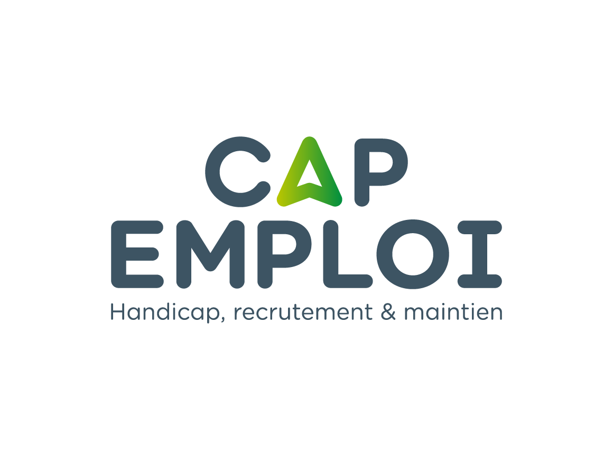

Présentation
Les missions des Cap emploi, à destination des personnes en situation de handicap et des employeurs,
participent et contribuent au développement d'une société plus inclusive
pour les personnes en situation de handicap.
Les missions des Cap emploi s'inscrivent en complémentarité avec les autres acteurs de droit commun,
les acteurs institutionnels et opérationnels au niveau national, régional et local.
Un peu d'histoire
2000
Création du Label Cap emploi
EPSR
Équipe de préparation
et de suite au reclassement
créés en 1975
OIP
Organisme d'insertion
et de placement
créés en 1987

Octobre 2000 : Création du label Cap Emploi
en tant qu'Organismes de Placement Spécialisés
2018
Intégration du maintien dans l'offre de services des OPS
Depuis le 1er janvier 2018, et conformément à l'article 101 de la loi travail du 8 août 2016,
les missions de maintien dans l'emploi ont été intégrées au sein des Organismes de
Placement Spécialisés dénommés Cap emploi.
2021 – 2022
Rapprochement France Travail (ex Pôle emploi) – Cap emploi
Les objectifs
- Améliorer l'accès ou le retour à l'emploi de tous les demandeurs d'emploi en situation de handicap et les accompagner vers une insertion durable et de qualité.
- Mettre en place une complémentarité entre Pôle emploi et le réseau Cap emploi en renforçant les expertises et en créant des parcours sans couture.
- Renforcer les partenariats avec les autres acteurs économiques, institutionnels et associatifs au niveau national et local.
La réponse — Le Lieu Unique d'Accompagnement (LUA)
- L'ensemble des demandeurs d'emploi en situation de handicap sont accompagnés au sein des agences de Pôle emploi, que leur conseiller référent soit un conseiller Pôle emploi ou Cap emploi.
- L'ensemble des expertises des deux réseaux y travaillent en synergie : conseillers accompagnement/entreprises, psychologues du travail, conseillers gestion des droits…